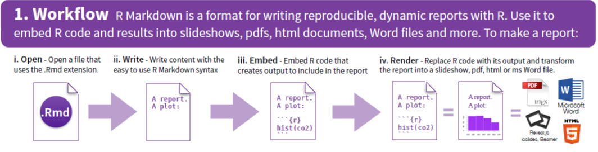
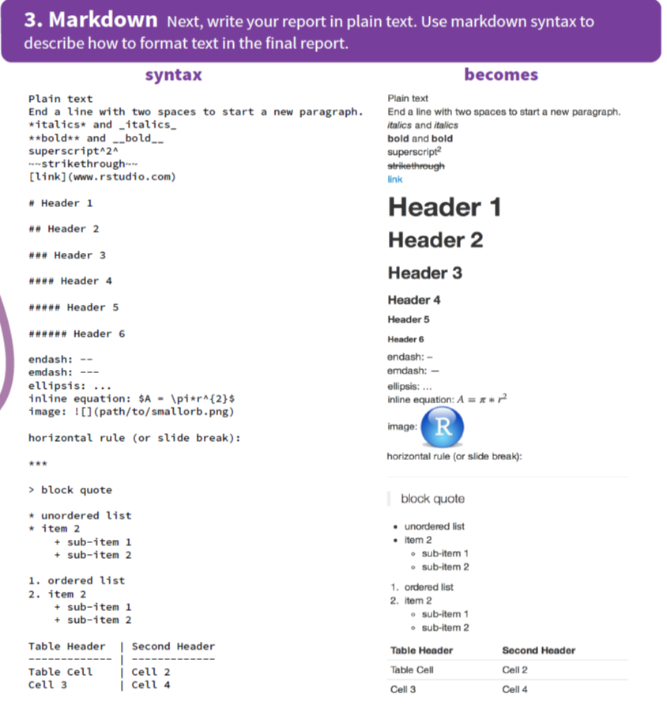
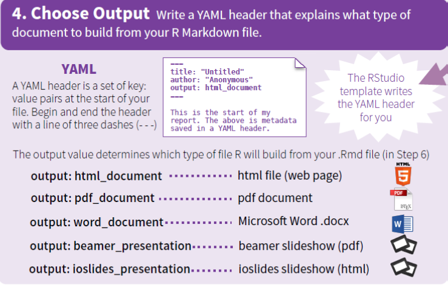
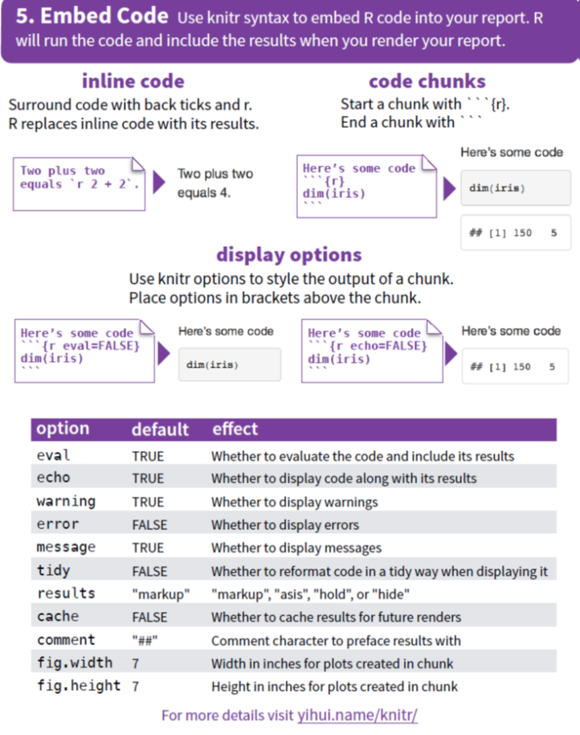
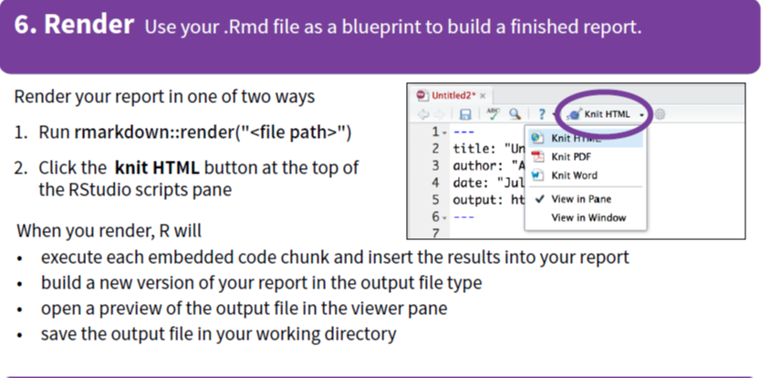

R Markdown combines report writing/slides/etc and code and data source in one file. The benefits are many and include:
We can change input data and the document will dynamically update.
We have a single source for multiple output formats (HTML, PDF, Word).
We use a single language for multiple output types (presentations, reports, books, papers, ...)
A major challenge for using data in industry, commercial and research settings is that reporting can become separated from the data itself, leading to problems in tracing how a particular graphic, statistic, etc was produced. This harms reproducibility and slows down the updating process, should new data become available.
We will need
install.packages("rmarkdown")and possibly the following:
install.packages("tinytex")
library(rmarkdown)
tinytex::install tinytex()The latter is needed for producing pdf files, and creates a local LaTeX installation.
The following steps summarise the basics.


We also include a document preamble, that is a section enclosed between two lines of --- at the top of the file. This specifies various options for the document, including:
title: the document title
author: (optional) author’s name
date: (optional) date for the document
output: for setting options of different output formats (HTML/PDF/Word)

A key consideration is the inclusion of R code and output (chunks). We achieve this via the triple-backtick fence, specifying the language to be R.
In the R Markdown file, we use:
```{r}
x <- rnorm(10, 3)
mean(x)
```This prints both the code (nicely formatted) and the result of executing that code:
x <- rnorm(10, 3)
mean(x)This is summarised on the next page with the final render step.


Other steps to the work-flow (not considered here) include the creation of interactive documents.
See also:
R Markdown cheat sheet